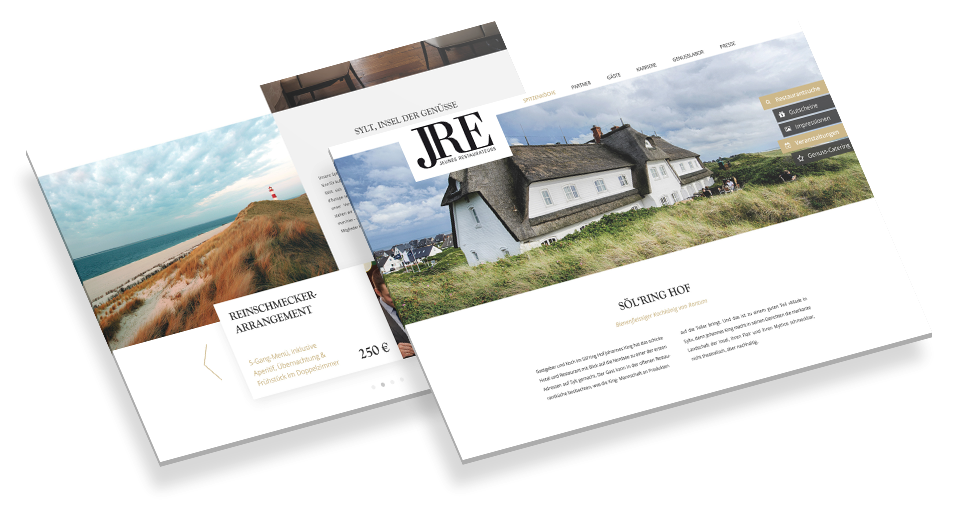

JRE is an association of young high quality chefs. For more than two years I was responsible for their online communication, social media management and webdesign.
JRE (Jeunes Restaurateurs) is an association of young high quality chefs. In total there are more than 350 restaurants and 160 hotels in Europe, spread over 14 countries. With JRE everything revolves around sharing and propagating talent and passion. The young chefs show great solidarity with each other and exchange their cooking knowledge and expertise with pleasure.
Even though most of the JRE chefs are quite young (most of them no more than 40 years old) their online and social media appearance was outdated and not optimizied for younger audiences. Additionally the German association (which I was more involved in) started multiple new projects and events to underline and support the JRE attitude and lifestyle. This includes new websites, print magazines, logo designs, advertising and social media campaigns.
I was part of a team of three people. We worked really close together to bring a consistant look across various print, online and social media projects. In the following overview you can see different examples of the work I've done. I decided to only include projects where I was head designer and/or did most of the work by myself. I was also only responsible for design and not development.